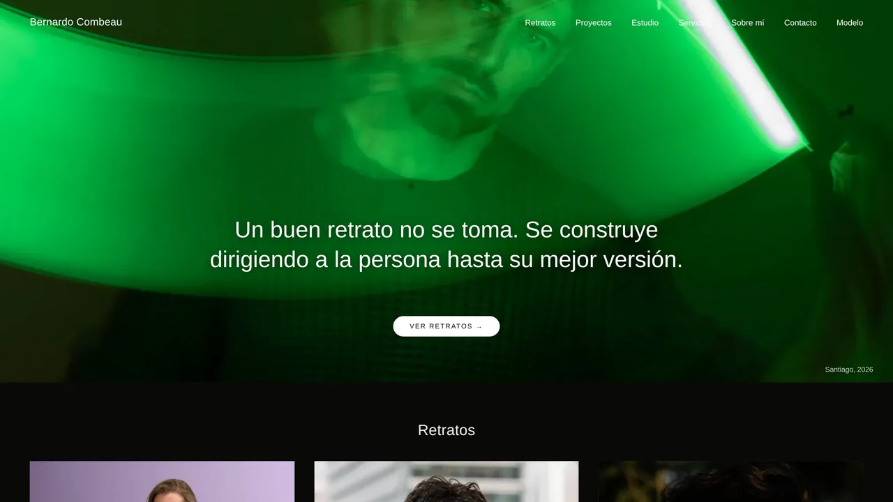

Estudio de diseño y tecnología
Diseñamos y programamos sitios a medida. Y los dejamos listos para que Google y ChatGPT puedan leerlos.
Para empresas, clínicas y estudios profesionales. Si tu sitio ya existe y no lo vas a rehacer, también hacemos SEO técnico y visibilidad en IA: revisamos qué le impide a Google y a ChatGPT leerlo, y lo arreglamos.
Chequeo gratis
Escribe la dirección de tu sitio y en segundos ves si ChatGPT y otros asistentes de IA pueden leerlo y entender a qué te dedicas.

Cliente · 2026
El sitio de un fotógrafo de retrato. Él sube sus series desde un panel, y el sitio las publica con cada foto ajustada a la pantalla de quien la mira.